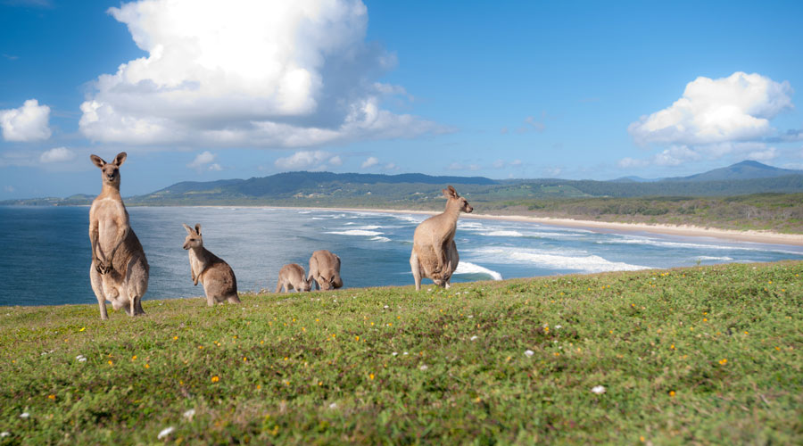
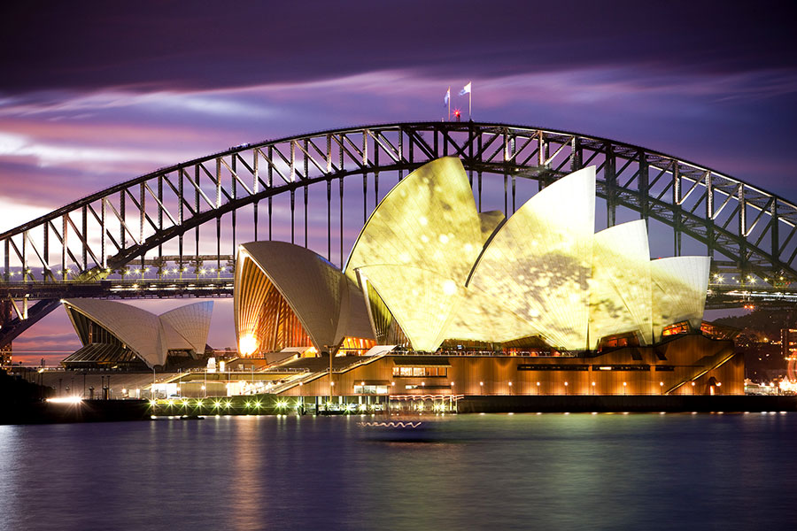
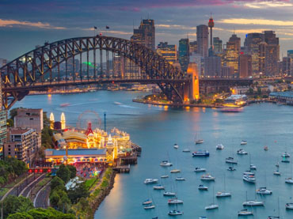
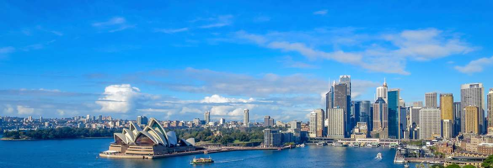

Austraila Tour Package
|  |
 |
 |
 |
8Days/7Night
Jumbo Discount Price Rs.99,999/-
About the Destination
Australia is the only country in the world which is also a continent in itself. It’s a vast country and the list of things that you can see and do here is quite endless. This land is known for its exquisite ambience and exotic atmosphere waiting to amaze every visitor. A holiday in Australia, known for its greenery, rainforests and nature trails proves to be a wonderful contrast to the bustling metropolises of mainland Australia. Australia vacation tours are also a popular food and wine destination. An eclectic blend of city and surrounds can make your holiday very special along with Australia New Zealand vacation.
The Geography and Seasons
Australia, the only country in the world which is also a continent is surrounded by the Indian and Pacific oceans. Because of the geographical location of Australia, it becomes a perfect fit for all seasons. All these seasons can be explored with our online Australia New Zealand tours packages. This alluring destination offers you idyllic, picturesque views with white sands, crystal blue waters, a beautiful marine life and a perfect ambience to go with it.
The Culture
The Aboriginal people of Australia have a rich, living culture stretching back atleast 50,000 years. Throughout Australia you'll find opportunities to explore and immerse yourself in Aboriginal culture. Trips to Australia and New Zealand let you witness this unique aspect of the land to its core nature. The traditions and lifestyles of the people here have a different aura altogether which add in a new charm to the trip.
The Experience
In holiday packages Australia, Sydney Sea Life Aquarium lets you experience the rich marine life. A stroll around Darling Harbour, enjoying the luxurious ‘Sydney Showboat Dinner Cruise’ along with the Dance Show with the amazing view of Sydney Harbour and Sydney’s amazing skyline as the panoramic background makes the entire experience one of a kind.
The Highlights
The star highlights of every Australia New Zealand tour belong to the main cities like Sydney, Gold Coast, Cairns, Melbourne, Rotorua, Auckland, Queenstown and Christchurch. Explore the world’s most iconic landmarks with online Australia tour packages like The Sydney Opera House, Harbour Bridge, Eastern Suburbs, Bondi Beach, Rocks Area and Sydney Tower Observatory deck giving a 360 degree view of the city.

|
|